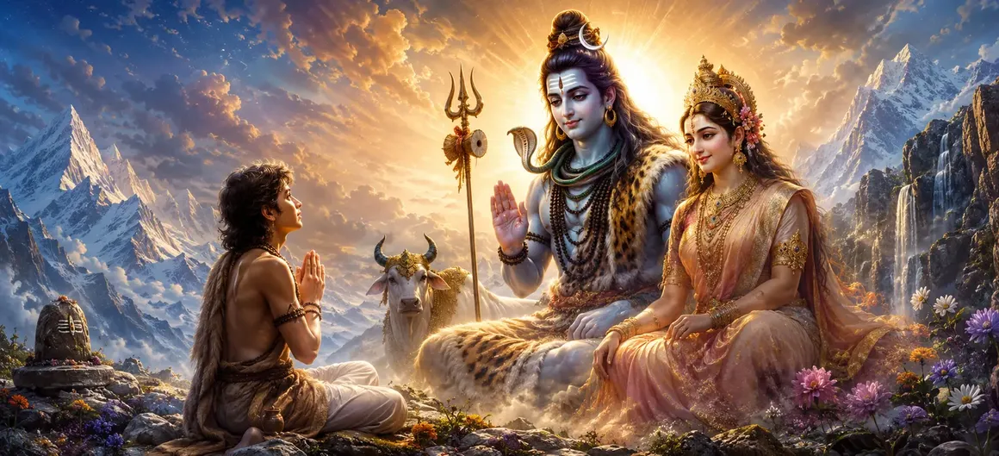

उपमन्यु की कहानी
वायवीय संहिता का पैंतीसवाँ अध्याय ऋषि उपमन्यु की अद्भुत कहानी को उजागर करता है, जिसमें उनके दिव्य परीक्षणों और सर्वोच्च प्राप्ति का विवरण दिया गया है।
ऋषि वायु बताते हैं कि कैसे भगवान शिव ने अपने दिव्य रूप को प्रकट करने और अनन्त आशीर्वाद देने से पहले उपमन्यु की भक्ति का परीक्षण किया।
यह अध्याय अटूट मानवीय भक्ति से मिलती हुई ईश्वरीय कृपा की एक कालजयी कृति के रूप में खड़ा है।
अध्याय 35 की मुख्य बातें
दिव्य परीक्षण
यह दर्शाता है कि कैसे भगवान शिव ने उपमन्यु की पूर्ण निष्ठा की परीक्षा ली।
दृढ़ भक्ति
उपमन्यु को हर परीक्षा में अच्छे अंकों से उत्तीर्ण होते हुए दिखाया गया है।
गौरवशाली एपिफेनी
इसमें भगवान शिव और देवी उमा के भव्य स्वरूप को दर्शाया गया है।
सर्वोच्च वरदान
उपमन्यु को दिए गए शाश्वत आशीर्वाद और दिव्य स्थिति का विवरण।
लौकिक अनुग्रह
सच्चे साधकों के प्रति महादेव की दयालु प्रकृति पर प्रकाश डालता है।
कथा प्रवाह
श्री कृष्ण के पुत्रों की खोज को कवर करते हुए अध्याय 36 में आसानी से आगे बढ़ता है।
इस अध्याय में मुख्य विषय
दैवीय परीक्षणों की शुरूआत
ऋषि वायु बताते हैं कि कैसे भगवान शिव, उपमन्यु के प्रेम की गहराई का परीक्षण करने की इच्छा से, विभिन्न बाधाओं और चुनौतियों को प्रकट करते थे।
ये परीक्षण यह साबित करने के लिए डिज़ाइन किए गए थे कि क्या युवा भक्त का हृदय अत्यधिक दबाव में भी शुद्ध रह सकता है।
भगवान शिव वेश में प्रकट होते हैं
उपमन्यु की और परीक्षा लेने के लिए, भगवान शिव इंद्र के भेष में उसके सामने प्रकट हुए और शिव की आलोचना की कि क्या उपमन्यु लड़खड़ाएगा।
उपमन्यु ने तुरंत आलोचनाओं को खारिज कर दिया और अपने प्रिय स्वामी की रक्षा में जमकर खड़े हुए।
उपमन्यु के अटल विश्वास की परीक्षा
सांसारिक धन-संपत्ति और स्वर्गीय अधिकार का प्रलोभन मिलने पर भी, उपमन्यु ने शिव के प्रति अपनी भक्ति से समझौता करने से इनकार कर दिया।
उनकी निष्ठा हीरे की तरह दृढ़ रही, जिससे ईश्वरीय कृपा के लिए उनकी सर्वोच्च पात्रता साबित हुई।
दिव्य स्वरूप का रहस्योद्घाटन
इस पूर्ण भक्ति से प्रसन्न होकर, भगवान शिव ने अपना भेष त्याग दिया और देवी उमा के साथ अपने वास्तविक, गौरवशाली रूप में प्रकट हुए।
पूरा जंगल दिव्य प्रकाश से जगमगा उठा और उपमन्यु परमानंद से अभिभूत हो गया।
परम वरदान और अनुग्रह प्रदान करना
भगवान शिव ने उपमन्यु को शाश्वत भक्ति, दिव्य दृष्टि, सभी दुखों से मुक्ति और सर्वोच्च आध्यात्मिक स्थिति का आशीर्वाद दिया।
शिव ने घोषणा की कि उपमन्यु एक अनुकरणीय भक्त के रूप में हमेशा उनके प्रिय रहेंगे।
उपमन्यु कथा का उपसंहार
अध्याय 35 उपमन्यु की प्रेरक कथा का समापन करता है, जिससे ऋषियों को ईश्वर के प्रति सच्चे प्रेम की शक्ति से गहराई से प्रेरणा मिलती है।
यह वृत्तांत इस बात पर प्रकाश डालता है कि भगवान शिव शुद्ध और निर्मल भक्ति से आसानी से प्रसन्न होते हैं।
अध्याय 36 की ओर
उपमन्यु की कहानी के बाद, ऋषि वायु अध्याय 36, 'श्री कृष्ण की पुत्रों की खोज' सुनाने की तैयारी करते हैं।
अगला अध्याय भगवान कृष्ण द्वारा योग्य संतान प्राप्त करने के लिए शिव की पूजा करने के महाकाव्य वृत्तांत में परिवर्तित होता है।
अध्याय 35 की मुख्य शिक्षाएँ
शुद्ध भक्ति
अटल निष्ठा सभी दिव्य परीक्षाओं को पार कर जाती है।
प्रलोभन का विरोध
सच्चे साधक कभी भी सांसारिक लाभ के लिए आध्यात्मिक प्रेम का सौदा नहीं करते।
शिव की कृपा
महादेव ईमानदार आत्माओं को अपना दिव्य रूप प्रकट करते हैं।
शाश्वत आशीर्वाद
सर्वोच्च आध्यात्मिक स्थिति और शाश्वत आनंद प्रदान करता है।
दयालु प्रभु
भगवान शिव को शुद्ध प्रेम और समर्पण से आसानी से जीत लिया जाता है।
अगला आख्यान
अध्याय 36 में भगवान कृष्ण की खोज में परिवर्तन।
आध्यात्मिक चिंतन
उपमन्यु की कहानी दर्शाती है कि जब एक भक्त का हृदय सभी परीक्षणों के बीच शुद्ध और अटल रहता है, तो भगवान स्वयं अपने शाश्वत दर्शन देने के लिए सभी आवरणों को तोड़ देते हैं।
अध्याय 35 का संदेश जीना
जीवन की कठिन परीक्षाओं के बावजूद अपने आध्यात्मिक सिद्धांतों पर दृढ़ रहें।
किसी भी भ्रम या प्रलोभन को अस्वीकार करें जो आपको दिव्य प्रेम से दूर खींचता है।
भगवान शिव की असीम करुणा और कृपा पर पूरा भरोसा रखें।
प्रमुख आध्यात्मिक अवधारणाएँ
भक्ति की अंतिम परीक्षा.
साधना के दौरान भ्रामक प्रलोभनों को अस्वीकार करना।
भगवान शिव और देवी उमा की धन्य दृष्टि।
शाश्वत भक्ति और कृपा प्रदान करें।
दिव्य वरदान प्रदान करना.
अध्याय 36 में कृष्ण की पुत्रों की खोज की प्रस्तावना।
अध्याय सारांश
वायवीय संहिता अध्याय 35 उपमन्यु की कहानी प्रस्तुत करता है। दैवीय परीक्षणों, इंद्र के भेष, अटल विश्वास, शिव और उमा की गौरवशाली अनुभूति और सर्वोच्च वरदानों के वितरण का वर्णन करते हुए, यह अध्याय शुद्ध भक्ति की अंतिम विजय पर प्रकाश डालता है। यह अध्याय 36, 'श्री कृष्ण की पुत्रों की खोज' के लिए मंच तैयार करता है।
अक्सर पूछे जाने वाले प्रश्न
1. वायवीय संहिता अध्याय 35 का प्राथमिक विषय क्या है?
अध्याय 35 ऋषि उपमन्यु की चमत्कारी कहानी का वर्णन करता है, जिसमें उनके दिव्य परीक्षण, भगवान शिव की महिमामय अभिव्यक्ति और दिए गए सर्वोच्च वरदान शामिल हैं।
2. इस कथा में भगवान शिव ऋषि उपमन्यु की परीक्षा कैसे लेते हैं?
भगवान शिव विभिन्न भेषों में प्रकट होते हैं और उपमन्यु की भक्ति की पूर्ण दृढ़ता का परीक्षण करने के लिए कठिन परीक्षण करते हैं।
3. भगवान शिव ने उपमन्यु को क्या वरदान दिया?
भगवान शिव उपमन्यु को शाश्वत भक्ति, अद्वितीय आध्यात्मिक स्थिति, दिव्य दृष्टि और शाश्वत आनंद प्रदान करते हैं।
4. वायवीय संहिता में इस अद्भुत कथा का वर्णन कौन करता है?
वायु ऋषि ग्रहणशील और प्रबुद्ध ऋषियों को उपमन्यु की विस्तृत कहानी सुनाते हैं।
5. अध्याय 35 के बाद नेविगेशन के लिए अगला अध्याय कौन सा है?
नेविगेशन के अगले अध्याय का शीर्षक 'श्री कृष्ण की पुत्रों की खोज' है।
"जब पूर्ण भक्ति परीक्षण की हर आग का सामना करती है, तो भगवान शिव अपनी सर्वोच्च कृपा प्रकट करते हैं और साधक को शाश्वत मिलन प्रदान करते हैं।"
वायवीय संहिता के माध्यम से जारी रखें
अध्याय 35 उपमन्यु की कहानी का समापन करता है। श्री कृष्ण द्वारा पुत्रों की तलाश जारी रखें।